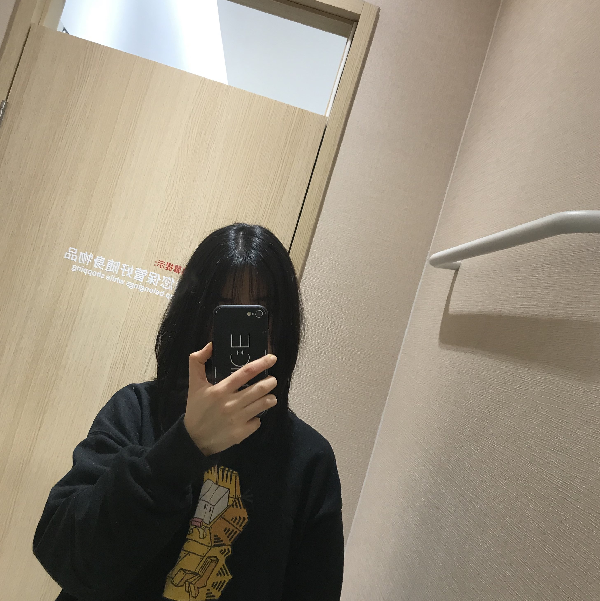

About me

Hi! I'm Yuwei Zhang, an undergraduate at Fudan University, Shanghai.
I have been a research assistant in the Mobile Systems and Networking (MSN) group since 2019, advised by Prof. Yang Chen.
I've been working on social network and mobile user behaviors analysis.
I'm striving to improve my knowledge and skills in Machine Learning, and I'm also interested in UI design as well as data analysis,
of which I hope to gain more understanding.
I love photography and vlogs. If you want to learn more about me, feel free to check out some of my photos here
and my videos at Bilibili.
Feel free to play with the comment page or come to chat with me too!